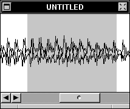
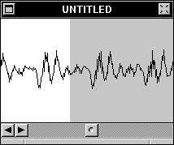

Zoom Factors
Sound windows can be Zoomed (Scaled) to display some or all of a sound, with varying degrees of precision. To change the Zoom Factor of a sound, use the Zoom Inspector  or the Zoom Menu.
or the Zoom Menu.
In the example below, the word "Hello" is Zoomed Out, which means that the entire sound is visible in the window.

In the next example, the same sound is partially Zoomed In, which stretches out the sound to give you a closer look at the actual sound data.

In this last example, the same sound is completely Zoomed In, which shows each and every sample as an individual pixel:
